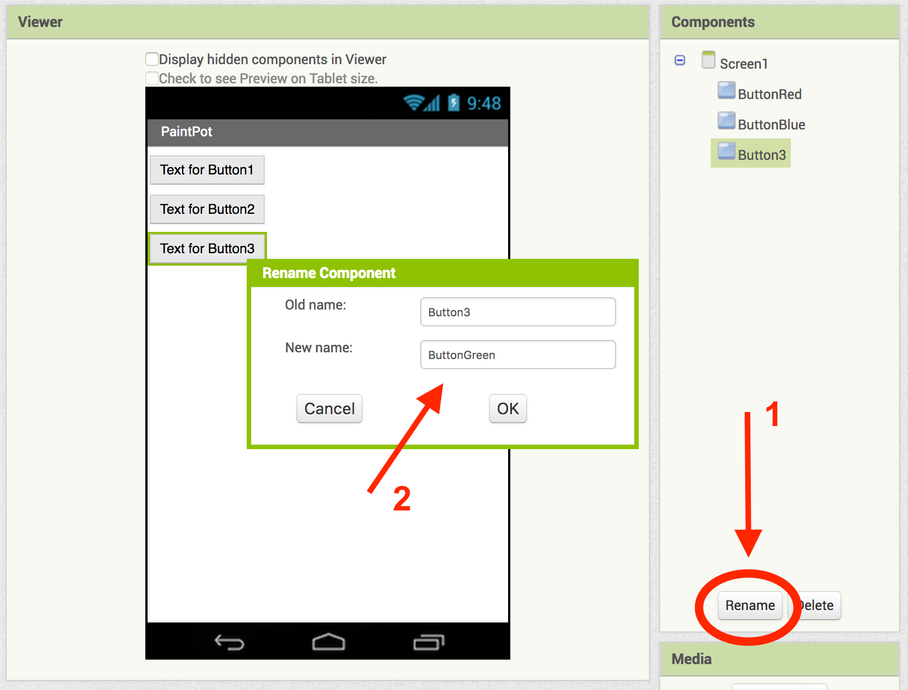

In this codelab, you'll make an app to draw on your phone.
What you'll learn
- Use the Canvas component for drawing.
- Learn how to use local variables and global variables.
- Work with different event handlers and types of blocks.
Create a new project and name it "PaintPot"

In the Properties panel, change the title to "PaintPot"
Drag three Button components into your workspace. Name the button components "ButtonRed","ButtonBlue", and "ButtonGreen".
Challenges
- Make your buttons look as shown below.
From the Drawing and Animation drawer, drag a Canvas component onto the workspace. Change the name of the component to "DrawingCanvas", set the Width to "Fill Parent", and set the Height to 300 pixels.
Download kitty.png from here. Upload the file in the Media panel.
Let's change the background image of the canvas to this picture so we can draw on it. In the Properties panel of the Canvas component, set the BackgroundImage to kitty.png.
Drag a Button component below the Canvas. Name the component "ButtonWipe".
Your app should look like this:
Now it's time to code our app. Go to Blocks View.
Open the ButtonRed drawer and drag out a when ButtonRed.Click block.
Open the DrawingCanvas drawer and drag out a set DrawingCanvas.BackgroundColor to block. From the drop down menu, change BackgroundColor to PaintColor. Place this block inside when ButtonRed.Click.
Open the Colors drawer and drag out the block for the color Red. Place it into the set DrawingCanvas.PaintColor to block.
Repeat these steps for the Blue and Green buttons.
For the wipe button, drag a when ButtonWipe.Click block into the workspace and place a call DrawingCanvas.Clear block into it.
Your buttons blocks should look like this:

Open the DrawingCanvas drawer and drag a when DrawingCanvas.Touched block into the workspace. From the DrawingCanvas drawer drag out a call DrawingCanvas.DrawCircle block and place it inside the when DrawingCanvas.Touched block.
To fill in the rest of the block, move your cursor over the x variable. Get the get x block and place it in the centerX socket. Do the same for y.
For radius, drag a blank number block from the Math drawer, and type 5. For the fill socket, it should say true.
Your final when DrawingCanvas.Touched block should look like this:
From the DrawingCanvas drawer, drag a when DrawingCanvas.Dragged block into the workspace, and drag a call DrawingCanvas.DrawLine block into the block.
Challenges
- Fill in the rest of the block like this:
Now we're going to create a way to change the size of the dot you draw when you touch the screen. To do this, we're going to use variables.
From the Variables drawer, drag out a initialize global name to block.
We're going to create a variable named "small", and set it equal to 2. Type "small" where it says "name".
To create the number block, type the number 2. A menu will appear, showing you all the possible blocks that include "2" in their name. Click on the first one, which is the number 2 itself, and a number block with the value 2 should appear.
Plug that in to the initialize global small to block.

Challenges
- Create two more variables:
- a variable named "big" whose value is 8
- a variable named "dotsize" whose value is 2
Go back to Designer View. Add a Horizontal Arrangement component to below the canvas component. Drag the Wipe button into the HorizontalArrangement.
Add two more button components into the HorizontalArrangement, next to the Wipe button. Name the buttons "ButtonBig" and "ButtonSmall", and set their Text to read "Big dots" and "Small dots", respectively.
Go to Blocks View. Find the when DrawingCanvas.Touched event handler and replace the number 5 with get dotsize from the Variables drawer.
Drag a when ButtonSmall.Clicked event handler into the workspace. Place a get global dotsize to block in the event handler, and plug in get global small into the block.
Repeat the same steps for the ButtonBig blocks. Your finished blocks to change the size of the dots shoud look like this:
Your finished blocks should look something like this:

You have used App Inventor to create a drawing app.
What we've covered
- Use the Canvas component for drawing.
- Learn how to use local variables and global variables.
- Work with different event handlers and types of blocks.